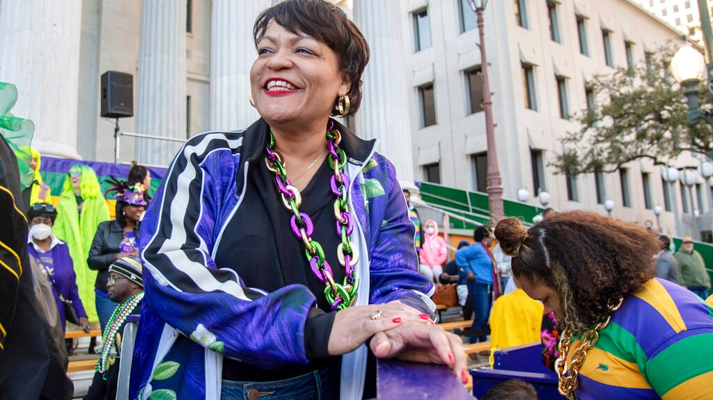

The origins of Mardi Gras can be traced to medieval Europe, passing through Rome and Venice in the 17th and 18th centuries to the French House of the Bourbons. From here, the traditional revelry of "Boeuf Gras," or fatted calf, followed France to her colonies.
On March 2, 1699, French-Canadian explorer Jean Baptiste Le Moyne Sieur de Bienville arrived at a plot of ground 60 miles directly south of New Orleans, and named it "Pointe du Mardi Gras" when his men realized it was the eve of the festive holiday. Bienville also established "Fort Louis de la Louisiane" (which is now Mobile) in 1702. In 1703, the tiny settlement of Fort Louis de la Mobile celebrated America's very first Mardi Gras.
In 1704, Mobile established a secret society (Masque de la Mobile), similar to those that form our current Mardi Gras krewes. It lasted until 1709. In 1710, the "Boeuf Gras Society" was formed and paraded from 1711 through 1861. The procession was held with a huge bull's head pushed along on wheels by 16 men. Later, Rex would parade with an actual bull, draped in white and signaling the coming Lenten meat fast. This occurred on Fat Tuesday.
New Orleans was established in 1718 by Bienville. By the 1730s, Mardi Gras was celebrated openly in New Orleans, but not with the parades we know today. In the early 1740s, Louisiana's governor, the Marquis de Vaudreuil, established elegant society balls, which became the model for the New Orleans Mardi Gras balls of today.
The earliest reference to Mardi Gras "Carnival" appears in a 1781 report to the Spanish colonial governing body. That year, the Perseverance Benevolent & Mutual Aid Association was the first of hundreds of clubs and carnival organizations formed in New Orleans.
By the late 1830s, New Orleans held street processions of maskers with carriages and horseback riders to celebrate Mardi Gras. Dazzling gaslight torches, or "flambeaux," lit the way for the krewe's members and lent each event an exciting air of romance and festivity. In 1856, six young Mobile natives formed the Mistick Krewe of Comus, invoking John Milton's hero Comus to represent their organization. Comus brought magic and mystery to New Orleans with dazzling floats (known as tableaux cars) and masked balls. Krewe members remained anonymous.
In 1870, Mardi Gras' second Krewe, the Twelfth Night Revelers, was formed. This is also the first recorded account of Mardi Gras "throws."
Newspapers began to announce Mardi Gras events in advance, and they even printed "Carnival Edition" lithographs of parades' fantastic float designs (after they rolled, of course - themes and floats were always carefully guarded before the procession). At first, these reproductions were small, and details could not be clearly seen. But beginning in 1886 with Proteus' parade "Visions of Other Worlds," these chromolithographs could be produced in full, saturated color, doing justice to the float and costume designs of Carlotta Bonnecase, Charles Briton and B.A. Wikstrom. Each of these designers' work was brought to life by talented Parisian paper-mache' artist Georges Soulie', who for 40 years was responsible for creating all of Carnival's floats and processional outfits.
1872 was the year that a group of businessmen invented a King of Carnival, Rex, to preside over the first daytime parade. To honor the visiting Russian Grand Duke Alexis Romanoff, the businessmen introduced Romanoff's family colors of purple, green and gold as Carnival's official colors. Purple stands for justice; gold for power; and green for faith. This was also the Mardi Gras season that Carnival's improbable anthem, "If Ever I Cease to Love," was cemented, due in part to the Duke's fondness for the tune.
The following year, floats began to be constructed entirely in New Orleans instead of France, culminating with Comus' magnificent "The Missing Links to Darwin's Origin of Species," in which exotic paper-mache' animal costumes served as the basis for Comus to mock both Darwin's theory and local officials, including Governor Henry Warmoth. In 1875, Governor Warmoth signed the "Mardi Gras Act," making Fat Tuesday a legal holiday in Louisiana, which it still is.
Like Comus and the Twelfth Night Revelers, most Mardi Gras krewes today developed from private social clubs with restrictive membership policies. Since all of these parade organizations are completely funded by their members, New Orleanians call it the "Greatest Free Show on Earth!"
As Mayor of the great City of New Orleans, I invite you to visit our city to experience the excitement of Mardi Gras! Mayor of New Orleans The Carnival season officially begins each year on Jan. 6 -- the Feast of the Epiphany, also called Twelfth Night or Kings’ Day. Traditional balls are held in the weeks leading up to the big event. Spectacular parades with colorful, creative floats start rolling before Mardi Gras Day. Our private Carnival clubs, called krewes, take on royalty status and throw beads, doubloons and toys to parade goers. Visitors quickly learn to say, "Throw me something mister!" The culmination of Mardi Gras in New Orleans begins early on Mardi Gras Day when the Zulu Social Aid & Pleasure Club and the Rex Organization parade through the city. Music, food and elaborate costumes add to the fun-filled day of excitement for revelers of all ages. New Orleans, with its unmatched culture and world-famous music and cuisine, is an exciting place to be at any time of the year. We invite everyone to experience Mardi Gras at least once in their lifetime. Make your plans now to be a part of this great tradition and see firsthand why we say, "Laissez les bon temps rouler!"
Sincerely, LaToya Cantrell Mayor of New Orleans
LaToya Cantrell (née Wilder; born April 3, 1972) is an American politician serving as the Mayor of New Orleans, Louisiana since May 7, 2018. A Democrat, Cantrell is the first woman to hold the office. Before becoming mayor, Cantrell represented District B on the New Orleans City Council from 2012 to 2018.
Cantrell returned to New Orleans in 1999, settling in the Broadmoor neighborhood. In 2003, she joined the board of the Broadmoor Improvement Association and became president of the association in 2004. After the 2005 levee failures in Greater New Orleans following Hurricane Katrina, the Broadmoor neighborhood flooded severely and remained mostly deserted for months afterward. In early 2006, the Bring New Orleans Back Commission, a blue-ribbon panel convened by then-mayor Ray Nagin, released a recovery plan that called for Broadmoor and five other New Orleans neighborhoods to be converted into greenspace. In her role as president of the association, Cantrell worked with residents and local religious leaders to organize opposition to the panel's recommendation. She also helped enlist returning Broadmoor residents in a six-month effort to write a recovery plan for the neighborhood.
Cantrell worked full time to implement Broadmoor's recovery plan from 2006 through 2012. She and fellow residents formed the Broadmoor School Board, overseeing the reopening and renovation of the Andrew H. Wilson school. She served as a founding board member of the Broadmoor Development Corporation, a community development corporation that provided case management and other social services for returning residents. She was involved with residents' efforts to reopen Broadmoor's Rosa F. Keller Library, which won a $2 million grant from the Carnegie Endowment. She created a partnership between the Broadmoor Improvement Association and Church of the Annunciation, which provided the neighborhood association with office space and hosted volunteer groups. She also formed a partnership between the Broadmoor Improvement Association and her home parish, Blessed Trinity Catholic Church, to open the Broadmoor Art and Wellness Center.